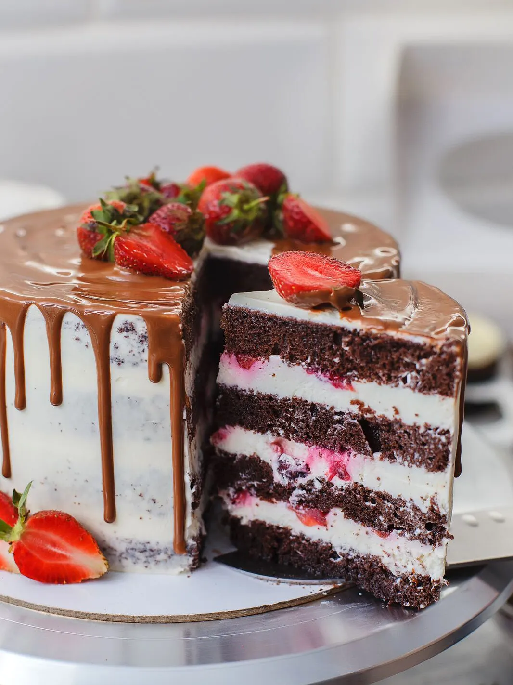
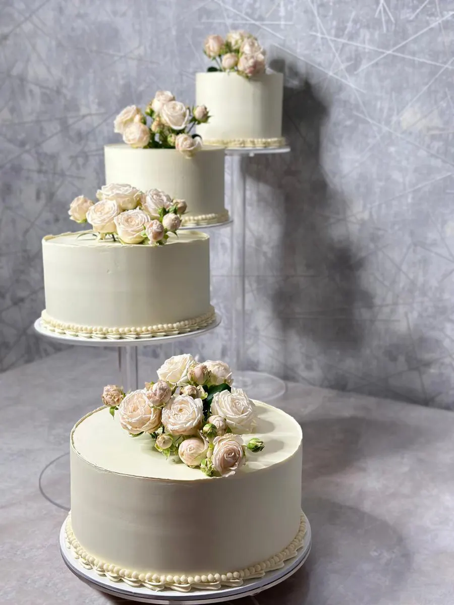
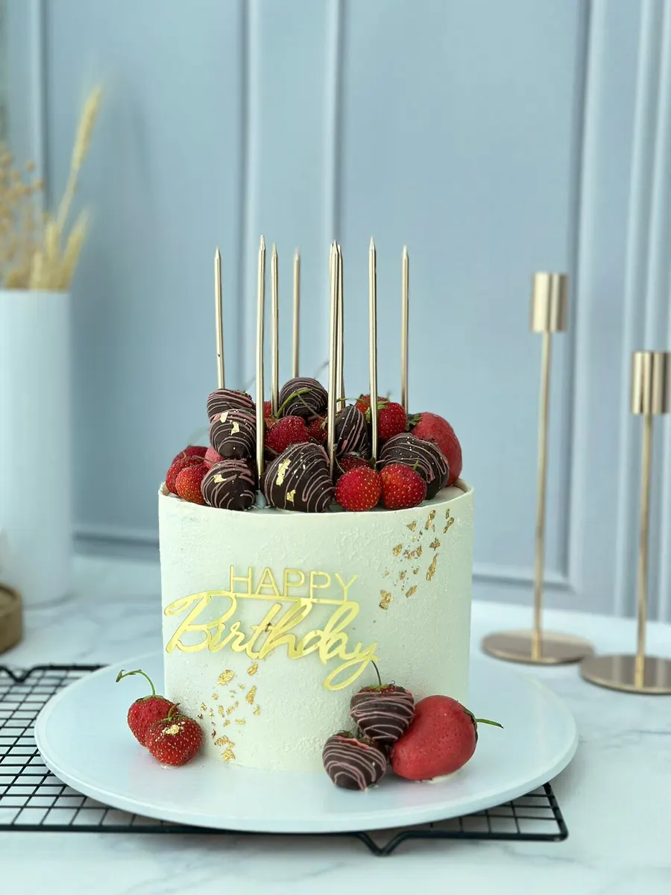
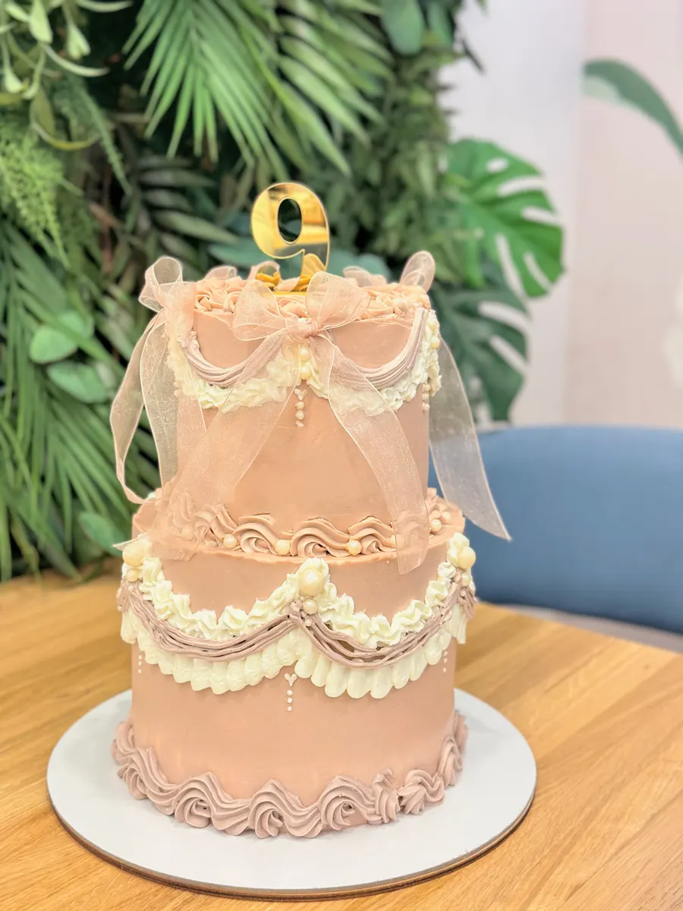

Кондитерская на 45-й Стрелковой Дивизии
Торты на заказ в Воронеже, в том числе срочные
Детские, юбилейные и свадебные торты, печать на тортах, капкейки и десерты. Много начинок, самовывоз и доставка, срочный заказ от 2 часов.

- 4,7 на Яндекс.Картах, 38 оценок
- Срочные заказы от 2 часов
- Открыто ежедневно с 9:00 до 21:00
Что у нас можно заказать
Цену торта называем при заказе: она зависит от начинки, размера и оформления.
Торты
- Торт на заказдетские, юбилейные, с печатью на тортеуточнить
- Фигурные тортыуточнить
- Свадебный тортв том числе многоярусныйуточнить
Десерты и подарки
- Капкейкиуточнить
- Десерты в стаканчикахуточнить
- Новогодние подаркиуточнить
Как заказать торт
- 01
Повод и дата
Напишите в WhatsApp или позвоните: скажите, к какому дню нужен торт. Срочные заказы берём от 2 часов.
- 02
Начинка и дизайн
Выберите начинку и расскажите задумку, кондитер подскажет по вкусам и оформлению.
- 03
Самовывоз или доставка
Заберите торт на улице 45-й Стрелковой Дивизии, 259/7 или закажите доставку.



Что пишут клиенты
Подскажут по начинкам
«Всегда подробно расскажет по начинкам и посоветует дизайн», пишет Елена Муренец.
Учтут пожелания
«Были учтены все мои пожелания», пишет Валентина Иванова.
Доставка вовремя
«Доставка была прямо к назначенному времени!», пишет Марина.
Необычные начинки
«Необычные, вкусные начинки», пишет Анна Воронкова.
Отзывы с Яндекс.Карт
«Заказывала торт на ДР дочери. Осталась очень довольна, вкусный и красивый торт. Под заказ делали Дубайский шоколад. Все вовремя, качественно и эстетично,красиво! Рекомендую👍»
Лиана Гладышева · 25 января 2025
«Заказывала тортик маме на ДР, торт вкусный нежный, всем очень понравился. Замечательно оформлен. Были учтены все мои пожелания. Именинница отдельно просила выразить Наталье благодарность. Рекомендую однозначно👍»
Валентина Иванова · 28 марта 2025
«Капкейки для подруги получились изумительные и очень вкусные. Очень рада, что знакомые посоветовали заказать их именно у вас! Доставка была прямо к назначенному времени!»
Марина · 16 сентября 2024
Отзывы с карточки на Яндекс.Картах, без правок.
Контакты
- Адрес
- улица 45-й Стрелковой Дивизии, 259/7, Воронеж
- Часы
- ежедневно, с 9:00 до 21:00
- Телефон
- +7 (960) 109-47-09